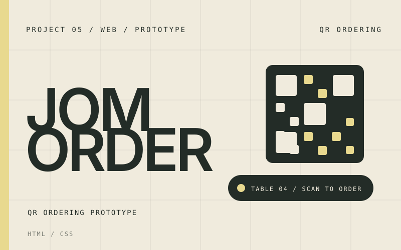

2025 · Web · Archived
Jom Order

- Role
- Developer — front-end pages and order flow
- Stack
- HTML · CSS
- Context
- Prototype, archived
- Status
- Not maintained
Purpose
A QR ordering prototype for table-side menus: scan a code at the table, open the menu, and place an order without waiting for staff.
Approach
A static front-end prototype in HTML and CSS covering the customer-facing flow — menu browsing and order entry — built to test the interaction before committing to a backend.
Status
The project is archived and not maintained. It was an early web prototype; the ordering idea was set aside, and the code stays public as a small layout and flow reference.